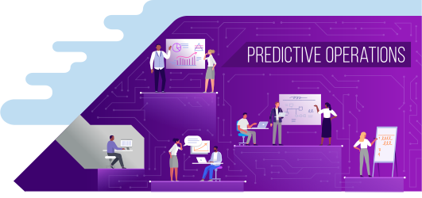
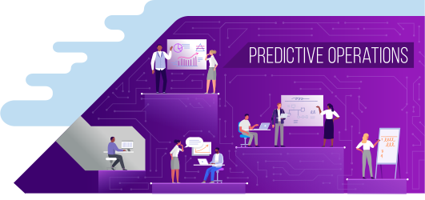

SynOps is a human + machine platform that connects intelligent technologies, talent and data and analytics to accelerate the move to intelligent operations.
LEARN MORE
Cost Savings
Improve operational efficiencies with foundational tools and technologies
Increased Compliance
Implement processes and tools to advance compliance but minimal adoption
Customer Satisfaction Boost
Improve speed of product and service innovation with faster time to market
Quality improvements
Adopt tools to automate processes and drive touchless transactions
Productivity & Efficiency Gains
Incorporate touchless processing with workflow capabilities to reduce cycle times
Procurement Spend Reduction
Provide readily accessible data and insights to make more informed decisions
Reduced Inventory
Use technology to understand business demands and anticipate their needs
Stakeholder Experience Enhanced
Use predictive insights to improve both internal and external stakeholder experiences
Highest Employee Satisfaction
Inspire the workforce by giving them the tools, skills and confidence
1st Quartile Customer Experience
Provide engaging and seamless experiences for all internal and external stakeholders
Enhanced Stakeholder Outcomes
Use diverse skillsets and data for new opportunities to transform business outcomes


Predictive Operations
Apply industry and functional leading practices, and leverage analytics to drive insights from blended data within the organization—to improve decision making, enhance experiences and improve business outcomes.
OUTCOMES: Procurement Spend Reduction, Reduced Inventory, Stakeholder Experience Enhanced
More about Predictive Operations
Talent
- Machines augment humans for select processes.
- Multi-disciplinary workforce: includes analytics experts and business advisors.
Tech
- Agile Workforce Platform: Crowdsourcing tool that matches project needs and niche skills from various talent sources.
- Advanced Data Science: Accenture Insights Platform (AIP+), over 500 analytics tools that convert financial data into insights.
Data
Apply analytics to drive data insights using blended data from former siloes within their organization (as well as data from partners) to anticipate and position for market shifts.


Future-Ready Operations
Intelligent operations run end-to-end digitized processes; continually mobilize specialized talent, innovative technology, and diverse data on demand, realizing stronger performance gains and overall value.
OUTCOMES: Highest Employee Satisfaction, 1st Quartile Customer Experience, Enhanced Stakeholder Outcomes
More about Future-Ready Operations
Talent
- Real-time Agile Workforce On-demand: Collaborative workforce, ability to mobilize specialized talent when needed.
- Specialized talent: Knowledge workers focused on judgement-based work, data scientists and innovation leads.
Tech
- AI, cloud and blockchain enabled.
- Intelligent Automation Platform draws on 2,000+ AI agents and automation bots, analytics apps to drive efficiency and consolidate data.
Data
Harness insights from a diverse portfolio of sources—using advanced analytics and AI capabilities—to power predictive decisions and improve decision making.